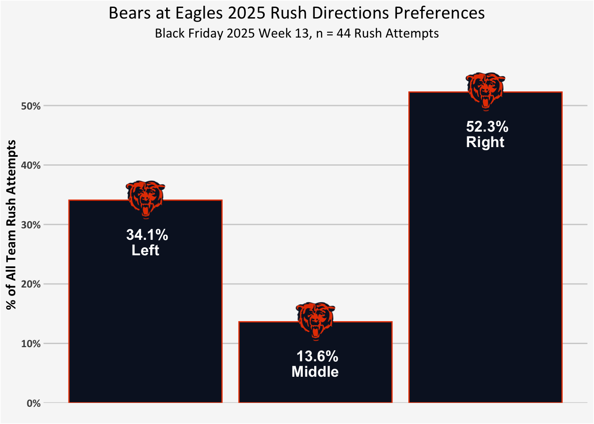
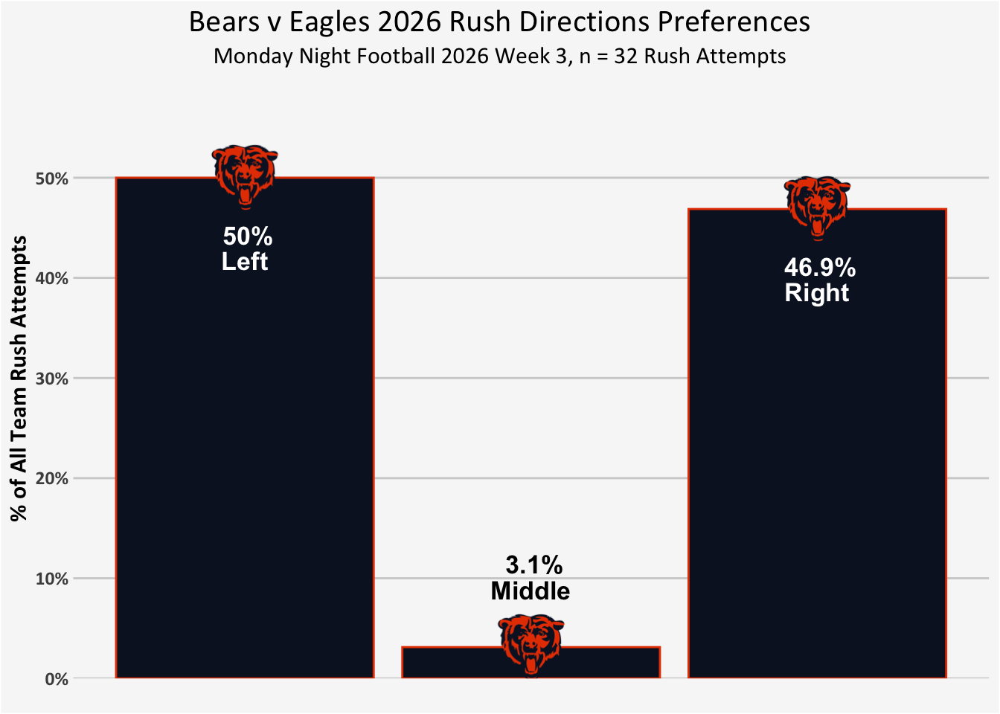
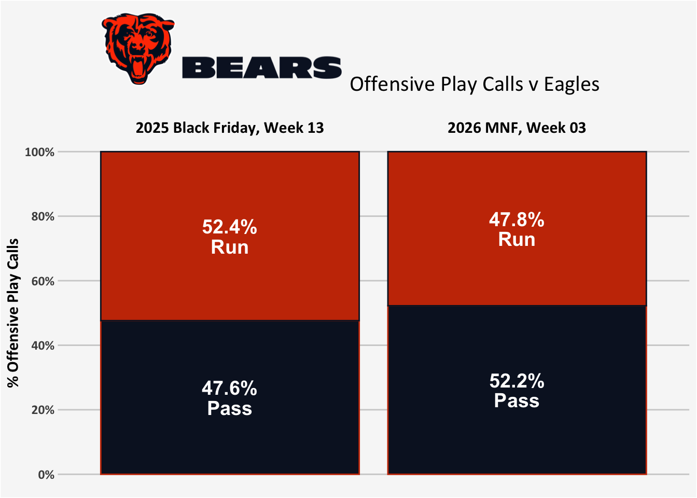
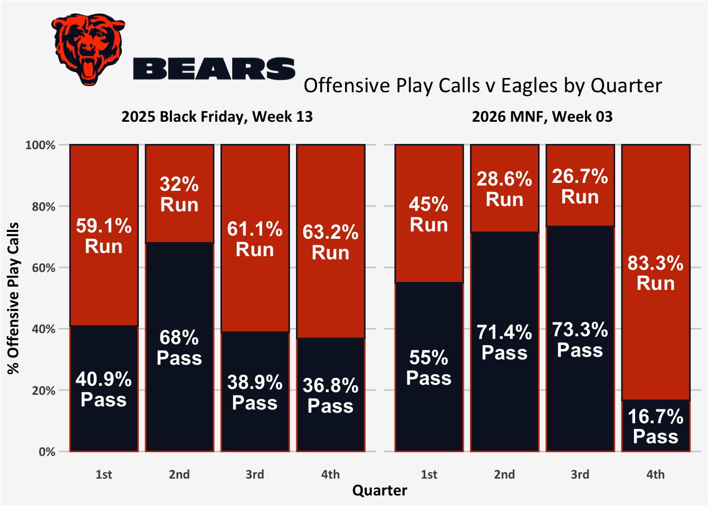
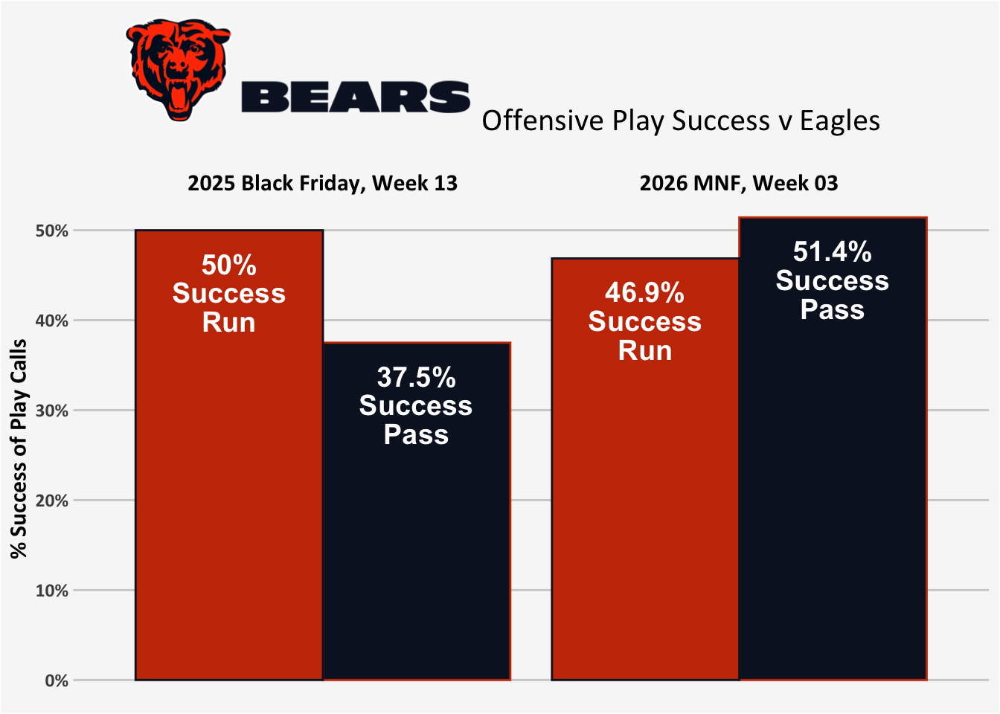

QB1 Caleb Williams was out with the hamstring injury suffered in week 2, QB2 Tyson Bagent was in the concussion protocol for most of the week and not taking reps at practice. QB3 Case Keenum was up, and the Bears were playing a team that last year they dominated primarily by running the ball.
Let’s set the scene!
Black Friday 2025, Week 13, Bears at Eagles
After an 0-2 start to the 2025 season, the Bears started stacking some wins, including a number of come from behind victories — but against some not-top-tier-teams (i.e., Las Vegas Raiders, New York Giants, Washington Commanders, Cincinnati Bengals).
The game against the Eagles was a chance to make a statement win against a quality team, and the Bears did just that, particularly with a dominating run game.
What did their run play calling look like in 2025 against the Eagles?
NoteNitty-gritty details of rush attempts that are excluded
I will stick the the definitions I used in week 1 for rush attempts (i.e., exclude QB scrambles and kneel downs, exclude play_type “no_play”, but other plays with penalties remain).
Run Direction
In their 2025 Black Friday match up against the Eagles, the Bears were consistent with their general trends of running to the right.
In this 2026 week 3 Monday Night Football game, they still avoided the middle (the only run there was the 1 yard delayed QB sneak by Case Keenum for a touchdown), but they actually (slightly) preferred the left side over the right! 🤔

What happened? During the broadcast, Troy Aikman pointed out a play where the right tackle and guard (Darnell Wright and Jonah Jackson) took off at the snap and pulled out to the left to block: “Can’t always run right? Run them out to the left and then get Luther Burden in behind it.”1
Even more surprising, some sharp-eyed film watchers caught a 3rd & 1 in the 4th quarter2 where the Bears just flipped their offensive line, with right tackle and guard (Wright and Jackson) lined up on the left side. Check it out:
⬅⬅⬅🎥
Those two plays would make the difference of the left side vs right side slight preference in this game.
That is, the left-right split is 16 vs 15, and if we instead categorize it as literally who they choose to run behind, it flips to 17 plays in favor of Jackson and Wright’s side (vs 14 plays the other direction), a 53.1% preference.
So the Bears still want to run behind Wright and Jackson, they just occasionally mixed up how they did so. 😂
If the run was dominating the game plan, we might start to dig into the success metrics. But! Despite hearing a lot of pregame talk about the strength of the Bear’s run game and needing to rely on it to help a third string QB who hadn’t started a regular-season game in 1,009 days… that wasn’t how the game played out.
Play Calls: Run vs Pass
Case Keenum came out slinging the ball! I want to look at the offensive plays calls, how often the Bears called a run or pass play.
NoteNitty-gritty details of classifying run and pass
I counted QB scrambles as passes because a scramble generally indicates an plan to pass, but a breakdown forces a run. The Bears offense only had 2 QB scrambles in 2025 and 1 in 2026 (each for 4-5 yards). I excluded QB kneel downs, punts, extra points, two point attempts (in theory although there were none), and kickoffs. Thus, the remaining offensive plays are all run or pass.
Similar to the run plays above, I exclude any play_type of “no_play” (generally penalties before the snap or that nullify the play), but I am leaving in other plays with penalties (for now… a fuller understanding of best practices for dealing with plays with penalties is something I need to learn as mentioned previously).
Overall, there was a small jump in the passing rate, and a switch to preferring the pass over run — although both games were just barely on either side of being pretty evenly balanced offensive.

But if we break it down to the four quarters, the 2025 Bears had a pass-happy 2nd quarter, but were otherwise pretty run dominant across the other three quarters.
In 2026, we might interpret it as a 4th quarter where they ran the ball to bleed the clock and salt away the game with a commanding lead, but the rest of the 2026 game plan was much more pass dominant, especially in the middle half of the game.

Ben Johnson had never coached a starting quarterback who wasn’t a number 1 overall draft pick. So he decided to send Case Keenum out there throwing it all over the place. 😂
And it was successful. 🎯
We get to some pretty small sample sizes if we were to try to look at success rates while continuing to split runs versus passes by quarter (i.e., in the 2026 game the Bears only had 4 runs in each of the 3rd and 4th quarters), so we’ll just zoom back out to the game overall.
The run was used less this year, but it was pretty consistent in it’s success rate. But the 2026 Bears were much more successful with pass plays against the Eagles than they were in 2025.

Such a fun game and a great moment for Keenum.
Bear Down! 🐻⬇️🏈